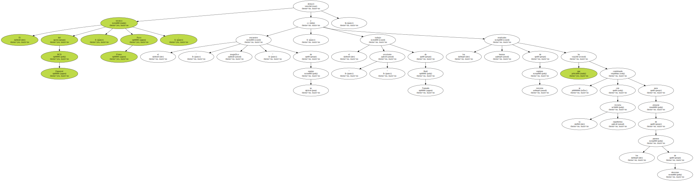
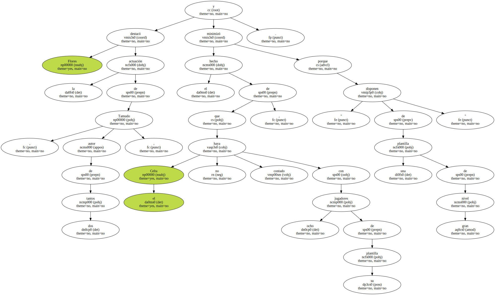
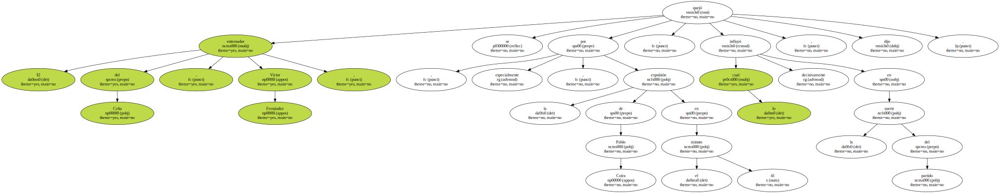
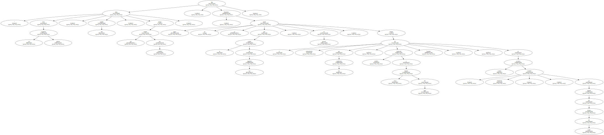

El técnico del RCD Espanyol , Paco Flores , destacó el " magnífico encuentro " de su equipo , el " excelente " trabajo de Raúl Tamudo y los buenos resultados de terceros equipos que se ha combinado con la victoria españolista para alejarse de los puestos de descenso.
" Todos los resultados nos han beneficiado , pero estoy especialmente contento porque la imagen del equipo ha sido muy buena " , dijo Flores , quien no comparte la opinión con Víctor Fernández sobre que la expulsión de Coira resultara determinante en la suerte del partido.

Flores destacó la actuación de Tamudo , autor de dos tantos , y minimizó el hecho de que el Celta no haya contado con ocho jugadores de su plantilla , porque " disponen de una plantilla de gran nivel ".
El entrenador del Celta , Víctor Fernández , se quejó , especialmente , por la expulsión de Pablo Coira en el minuto 41 , lo cual influyó decisivamente en la suerte del partido , dijo.
" Tras esa primera expulsión , hubo otro partido , porque nos rompió por completo " , dijo Fernández , quien no se quejó por la actitud de sus jugadores , en general , aunque sí puntualmente por las expulsiones - también fue expulsado Juanfran , a cinco minutos del final - en sendas acciones " totalmente evitables " , en opinión del técnico del Celta.
